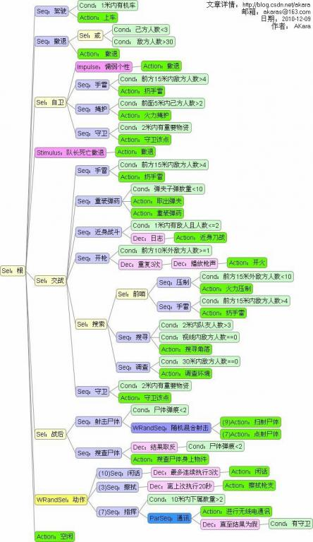

---------------------------------------------------------------------
行为树(Behavior Tree) 具有如下的特性：
它只有4大类型的Node：
* Composite Node（复合节点）
* Decorator Node（装饰节点）
* Condition Node（条件节点）
* Action Node（行为节点）
任何Node被执行后，必须向其Parent Node报告执行结果：成功 / 失败。
这简单的成功 / 失败汇报原则被很巧妙地用于控制整棵树的决策方向。
---------------------------------------------------------------------
先看Composite Node，其实它按复合性质还可以细分为3种：
* Selector Node（选择器节点）
当执行本类型Node时，它将从begin到end迭代执行自己的Child Node：
如遇到一个Child Node执行后返回True，那停止迭代，
本Node向自己的Parent Node也返回True；否则所有Child Node都返回False，
那本Node向自己的Parent Node返回False。
* Sequence Node（序列节点）
当执行本类型Node时，它将从begin到end迭代执行自己的Child Node：
如遇到一个Child Node执行后返回False，那停止迭代，
本Node向自己的Parent Node也返回False；否则所有Child Node都返回True，
那本Node向自己的Parent Node返回True。
* Parallel Node（平行节点）
平行执行它的所有Child Node。
而向Parent Node返回的值和Parallel Node所采取的具体策略相关：
Parallel Selector Node: 一False则返回False，全True才返回True。
Parallel Sequence Node: 一True则返回True，全False才返回False。
Parallel Fall On All Node: 所有False才返回False，否则返回True。
Parallel Succeed On All Node: 所有True才返回True，否则返回False。
Parallel Hybird Node: 指定数量的Child Node返回True或False后才决定结果。
Parallel Node提供了平行的概念。
不需要像Selector/Sequence那样预判哪个Child Node应摆前，哪个应摆后，
常见情况是：
(1)用于平行挂接多棵Action子树。
(2)在Parallel Node下挂一棵子树，并挂上多个Condition Node，
以提供实时性和性能。
Parallel Node增加方便性的同时，也增加实现和维护复杂度。
如图所示：

PS：上面的Selector/Sequence准确来说是Liner Selector/Liner Sequence。
AI术语中称为strictly-order：按既定先后顺序迭代。
Selector和Sequence可以进一步提供非线性迭代的加权随机变种。
Weight Random Selector Node提供每次执行不同First True Child Node的功能。
Weight Random Probability Node提供每次挑选唯一一个Node的功能。
Weight Random Sequence Node则提供每次不同的迭代顺序。
AI术语中称为partial-order，能使AI避免总出现可预期的结果。
---------------------------------------------------------------------
再看Decorator Node，它的功能正如它的字面意思：它将它的Child Node执行
后返回的结果值做额外处理后，再返回给它的Parent Node。很有些AOP的味道。
比如Decorator Not/Decorator FailUtil/Decorator Counter/Decorator Time...
更geek的有Decorator Log/Decorator Ani/Decorator Nothing...
---------------------------------------------------------------------
然后是很直白的Condition Node，它仅当满足Condition时返回True。
---------------------------------------------------------------------
最后看Action Node，它完成具体的一次(或一个step)的行为，视需求返回值。
而当行为需要分step/Node间进行时，可引入Blackboard进行简单数据交互。
---------------------------------------------------------------------
整棵行为树中，只有Condition Node和Action Node才能成为Leaf Node，而也
只有Leaf Node才是需要特别定制的Node；Composite Node和Decorator Node均
用于控制行为树中的决策走向。(所以有些资料中也统称Condition Node和Action
Node为Behavior Node，而Composite Node和Decorator Node为Decider Node。)
更强大的是可以加入Stimulus和Impulse，通过Precondition来判断masks开关。
通过上述的各种Nodes几乎可以实现所有的决策控制：if, while, and, or,
not, counter, time, random, weight random, util...
---------------------------------------------------------------------
总的来说，行为树具有如下几种优点，确实是实现AI框架的利器，甚至是一种
通用的可维护的复杂流程管理利器：
> 静态性
越复杂的功能越需要简单的基础，否则最后连自己都玩不过来。
静态是使用行为树需要非常着重的一个要点：即使系统需要某些"动态"性。
其实诸如Stimulus这类动态安插的Node看似强大，
但却破坏了本来易于理解的静态性，弊大于利。
Halo3相对于Halo2对BT AI的一个改进就是去除Stimulus的动态性。
取而代之的做法是使用Behavior Masks，Encounter Attitude，Inhibitions。
原则就是保持全部Node静态，只是根据事件和环境来检查是否启用Node。
静态性直接带来的好处就是整棵树的规划无需再运行时动态调整，为很多优化
和预编辑都带来方便。
> 直观性
行为树可以方便地把复杂的AI知识条目组织得非常直观。
默认的Composite Node的从begin往end的Child Node迭代方式就像是处理一个
预设优先策略队列，也非常符合人类的正常思考模式：先最优再次优。
行为树编辑器对优秀的程序员来说也是唾手可得。
> 复用性
各种Node，包括Leaf Node，可复用性都极高。
实现NPC AI的个性区别甚至可以通过在一棵共用的行为树上不同的位置来
安插Impulse来达到目的。
当然，当NPC需要一个完全不同的大脑，比如70级大BOSS，
与其绞尽脑汁在一棵公用BT安插Impulse，不如重头设计一棵专属BT。
> 扩展性
虽然上述Node之间的组合和搭配使用几乎覆盖所有AI需求。
但也可以容易地为项目量身定做新的Composite Node或Decorator Node。
还可以积累一个项目相关的Node Lib，长远来说非常有价值。